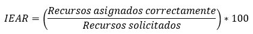
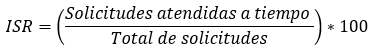

|
PSC 002| Gestión de los Recursos
|
Ver. 000
|
|
|
Creado por EGC | Aprobado por CEO
|
Fecha: 01.12.2024
|
Contenido
1.- Objetivo del Proceso................................................................................................................................................
2.- Alcance del Proceso................................................................................................................................................
3.- Matriz del Proceso...................................................................................................................................................
3.- Recursos del proceso..............................................................................................................................................
3.1.- Recursos.............................................................................................................................................................
3.2.- Responsables......................................................................................................................................................
4.- Seguimiento...........................................................................................................................................................
4.1 Metodología...........................................................................................................................................................
4.2.- Indicadores..........................................................................................................................................................
5.- Análisis y evaluación de riesgos del proceso.............................................................................................................
6.- Análisis y evaluación de oportunidades del proceso...................................................................................................
8.- Historial de Versiones.............................................................................................................................................
1.-
Objetivo del Proceso
Asegurar la planificación, provisión, asignación,
utilización y monitoreo eficaz de los recursos humanos, materiales,
tecnológicos y financieros necesarios para cumplir con los objetivos
establecidos en el Sistema de Gestión de la Calidad (SGC) y garantizar
la satisfacción de las partes interesadas.
2.-
Alcance del Proceso
Este proceso aplica a todos los recursos utilizados en la organización
para el desarrollo de las actividades operativas, estratégicas
y de soporte, abarcando desde la identificación de necesidades
hasta la evaluación de su eficacia y mejora.
3.- Matriz del Proceso
| ENTRADAS | PROCEDIMIENTOS (actividades) | SALIDAS |
| Plan Estratégico de la Organización | Identificación de necesidades de recursos. | Informe de necesidades. |
| Presupuesto Anual | Planificación y distribución de recursos. | Plan de asignación de recursos. |
| Resultados de auditorías internas y externas | Evaluación del uso y eficiencia de los recursos. | Informe de auditoría y plan de acción. |
| Requisitos legales y normativos | Monitoreo y actualización de recursos. | Registros de cumplimiento normativo. |
3.-
Recursos del proceso
3.1.- Recursos
Para este proceso de Liderazgo se requieren:
Para este proceso de Gestión de los Recursos se requieren:
- Recursos Humanos: Personal capacitado y responsable de la gestión de recursos.
- Recursos Financieros: Presupuesto para adquisición, mantenimiento y mejora de recursos.
- Recursos Tecnológicos: Software y herramientas de gestión.
- Recursos Materiales:
Insumos, equipos e infraestructura.
3.2.- Responsables
- Gerente de Recursos.
- Equipo de Gestión Financiera.
- Líderes
de Procesos.
4.- Seguimiento
4.1 Metodología
El seguimiento del proceso de Gestión de los Recursos se realiza mediante:
- Monitoreo Continuo: Revisión periódica de los recursos asignados y utilizados.
- Evaluación de Indicadores: Análisis de datos relacionados con el desempeño del proceso.
- Auditorías Internas: Verificación de la correcta asignación y uso de recursos.
- Revisión
de Resultados: Reuniones de seguimiento para ajustar planes y estrategias.
4.2.-
Indicadores
ÍÍndice de Eficiencia en la Asignación de Recursos
(IEAR):
Índice de Satisfacción de Recursos (ISR):
(Mide el desempeño del Proceso 002)

Meta: 95%.
Frecuencia: Mensual.
Fuente de Datos: Registros de solicitudes y asignaciones.
Acción Correctiva: Revisar planificación y procesos si el
resultado es <85%.

Meta: 90%.
Frecuencia: Trimestral.
Fuente de Datos: Encuestas internas y tiempos de respuesta.
Acción Correctiva: Capacitar personal y mejorar tiempos si el resultado
es <80%.
Justificación:
Un nivel de cumplimiento superior al 90% indica un compromiso efectivo
con el SGC. Un cumplimiento entre 75% y 89% sugiere áreas de mejora.
Un cumplimiento inferior al 75% requiere revisión de estrategias
y recursos.
Fuente de Datos: Informes de revisión de la dirección y
auditorías internas.
Frecuencia de Evaluación: Trimestral, en reuniones de revisión
del SGC.
Plan de Acción: Si el indicador está en rango no aceptable
(<75%), la Alta Dirección debe revisar recursos y tomar acciones
correctivas.
5.-
Análisis y evaluación de riesgos del proceso
La evaluación de riesgos en el proceso de Gestión de los
Recursos incluye:
- Riesgo de Insuficiencia de Recursos: Recursos no disponibles para necesidades críticas.
- Riesgo de Ineficiencia Operativa: Uso inadecuado o subutilización de recursos asignados.
- Riesgo de Sobrecosto:
Exceso en el presupuesto debido a una planificación deficiente.
6.-
Análisis y evaluación de oportunidades del proceso
Para asegurar un proceso de Gestión de los Recursos eficaz y alineado
con los objetivos del SGC, es importante identificar y aprovechar las
oportunidades que puedan mejorar el desempeño del proceso de liderazgo.
A continuación, se presenta el análisis y evaluación
de las principales oportunidades:
- Automatización de la Gestión: Implementación de software para optimizar la asignación y monitoreo.
- Capacitación del Personal: Formación continua para una mejor gestión de los recursos.
- Mejora en la Planificación:
Optimización del presupuesto mediante análisis de datos
históricos.
.
7.-
Documentación de Referencia
- Plan Estratégico de la Organización.
- Normas ISO 9001:2015.
- Informes de auditorías internas y externas.
- Registros de Asignación de Recursos.
| Versión | Fecha | Asiento | Aprueba |
| 000 | 01.12.2025 | Original | CEO |